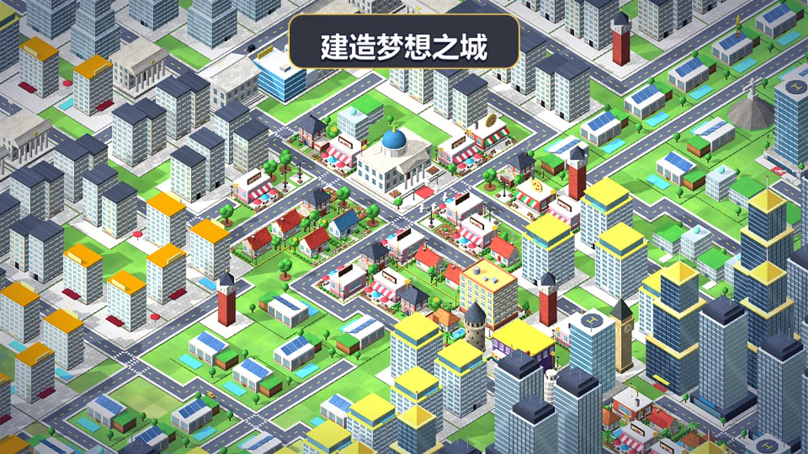
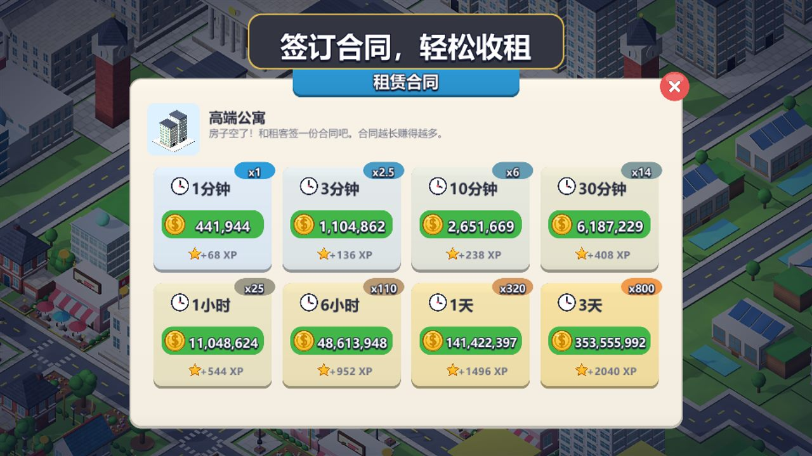
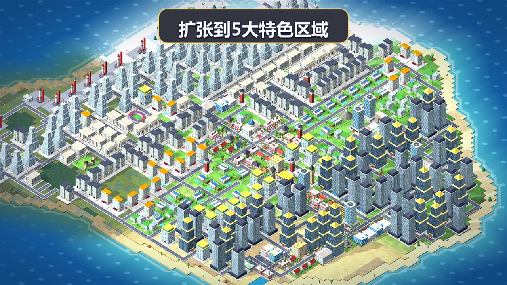
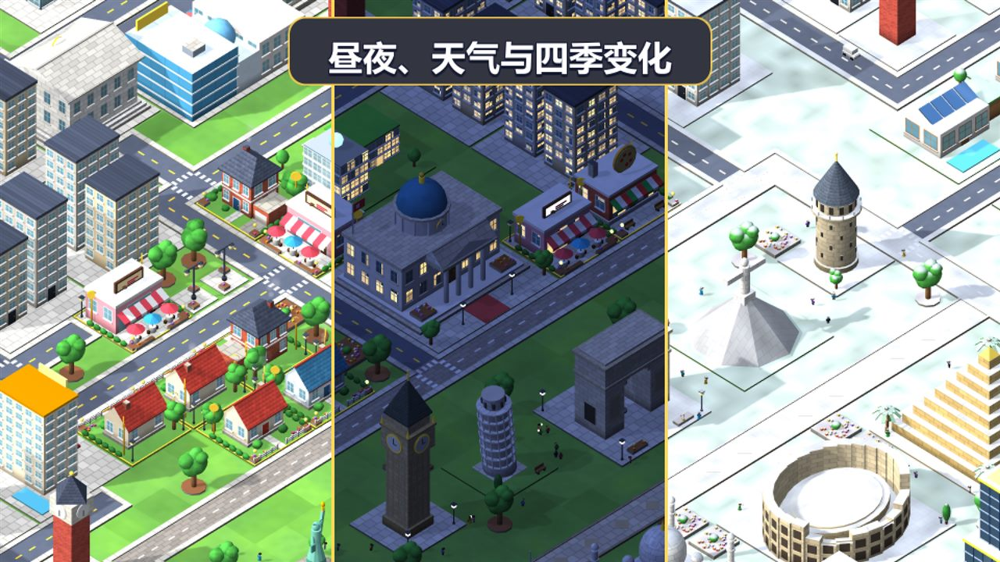
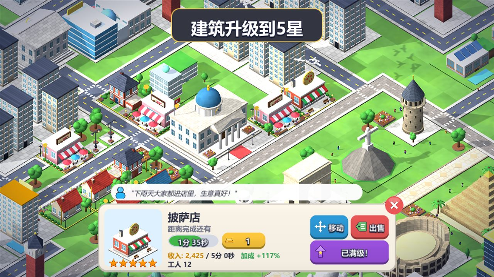
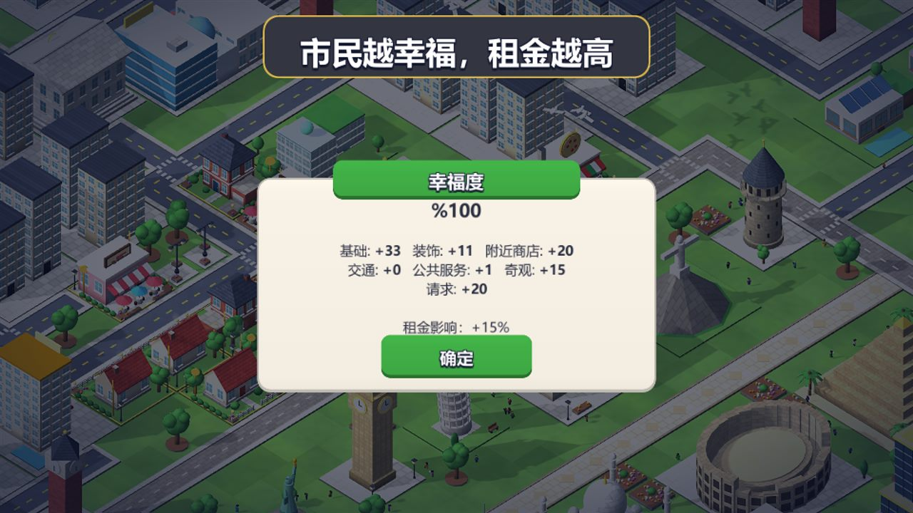
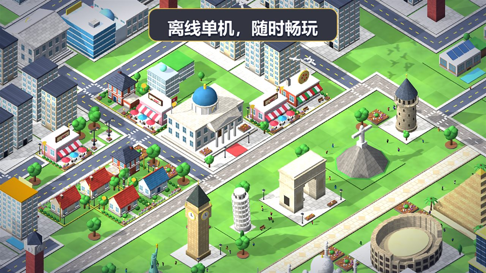

建造梦想之城
摆放温馨小屋、公寓楼、玻璃塔楼和摩天大楼。开设咖啡馆、披萨店、电影院、银行和购物中心。用沥青马路、石板路或鹅卵石街道把一切连接起来，再用公园、喷泉、花坛和雕像装点城市。
Money City是一款轻松治愈的城市建造模拟经营游戏。在这里，你既是市长，也是房东：盖房子、和租客签租赁合同、按时收租，把一座绿色小村庄一步步打造成富裕的超级都市。支持离线单机游玩，碎片时间玩几分钟，或一口气玩上几个小时都可以。
在 Google Play 上获取
摆放温馨小屋、公寓楼、玻璃塔楼和摩天大楼。开设咖啡馆、披萨店、电影院、银行和购物中心。用沥青马路、石板路或鹅卵石街道把一切连接起来，再用公园、喷泉、花坛和雕像装点城市。
每栋房子都需要租客。租赁合同从1分钟到3天任你选：合同越长，收益越高。玩的时候签短合同，睡前签长合同。租金到账时会有租金提醒通知你。
购买新土地，向五大区域扩张：草地、森林、冰原、沙漠和沼泽。每个区域都有专属住宅，比如小木屋、冰屋、土坯房和高脚屋。
建造埃菲尔铁塔、罗马斗兽场、大金字塔、泰姬陵、自由女神像等著名地标。每座奇观都能提升周边建筑的收入。
看昼夜交替、风雨来袭、四季轮转。市民在街头漫步，汽车穿梭往来，船只在水上航行，游客纷纷前来参观你的奇观。
用公园、商店以及公交站、地铁站、港口、机场等交通设施让市民开心。完成市民请求，提升幸福度，租金也随之上涨。
把建筑升级到10星，收入更上一层楼。完成任务、解锁成就，从村庄一路晋升到超级都市，还能参加每周活动，赢取限定装饰。
缺钱就去贷款，钱多就存起来，每天都有利息，离线也照样增长。
你是市长，税率由你决定。税收充实金库，但税太高市民会抗议；置之不理就会爆发暴乱，商店惨遭洗劫。
建造学校、警察局、消防站、医院和大学，提升周边租金和市民幸福感。
救下树上的猫、修电线和水管、灭火、补坑、开保险箱，13种小游戏等你挑战。
7天连续登录、每日任务和宝箱、幸运转盘、收藏图鉴、新地块里的隐藏宝藏，还有满载游客的观光巴士。
在等级、财富和租金收入上与全球市长一较高下，第一名的城市将拥有金色市政厅。







Money City是一款适用于Android的免费城市建造大亨游戏。你可以建造住宅和商铺，与租客签订租赁合同、收取租金，在拥有五大区域的大岛上把小村庄发展成超级都市。
可以。Money City无需联网即可游玩。只有在观看可选广告领取金条奖励时才需要网络。 排行榜同样需要联网。
每栋住宅都需要一份租赁合同。合同时长从1分钟到3天不等，合同越长收益越高。租金准备好后轻点即可收取，也可以用金条立即收租。
不是。游戏中的一切都可以通过游玩获得。金条来自奖励广告、每日礼物和成就。
英语、土耳其语、西班牙语、德语、法语、意大利语、葡萄牙语、巴西葡萄牙语、俄语、阿塞拜疆语、印地语和中文。游戏会自动使用你手机的系统语言。
有。你可以在中央银行贷款，也可以存款，即使关闭游戏，存款每天也会产生利息。
有。共有等级、财富和租金收入三个全球排行榜。你可以自己取名，第一名的城市会获得金色市政厅。
如果你喜欢过那些从建筑收租的经典社交城市建造游戏，Money City把这种乐趣带到了手机上：建造、收租、扩张、装饰，按自己的节奏来，离线也能玩。
Money City可免费游玩。广告完全自愿：只有想要额外金条等奖励时才需要观看。
如果你喜欢城市建造、大亨和模拟经营类游戏，现在就开始打造属于你的Money City吧。